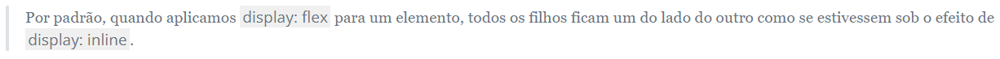

Vimos algumas maneiras de manipular posicionamento de elementos como display: inline/block/inline-block, margin: e text-align, mas todas essas maneiras são muito "rígidas" na hora de distribuir elementos na página. Nós conseguimos posicionar com uma certa precisão os elementos na tela, mas esse posicionamento é muito fixo no sentido de que se o container ou a tela mudar de tamanho, os elementos não vão ter seu posicionamento adaptado.
Pensando nessa flexibilidade de posicionamento, as pessoas desenvolvedoras criaram um novo tipo de display: o display: flex;.
Flex Container
O display: flex funciona de uma maneira diferente dos outros displays. Quando colocamos essa propriedade em um elemento, esse elemento se torna um flex container, a partir daí podemos manipular todos os elementos filhos desse flex container com propriedades novas. Essas propriedades devem ser usadas no elemento que é um flex container.

Propriedades de um Flex Container
justify-content:
Essa prorpiedade ajusta horizontalmente os elementos filhos do flex container
flex-start: É o valor padrão. Os elementos ficam grudados um do lado do outro à esquerda do flex container.
flex-end: Os elementos ficam grudados um do lado do outro à direita do flex container.
center: Os elementos ficam grudados um do lado do outro no meio do flex container.
space-between: O primeiro elemento fica totalmente à esquerda do flex container e o último fica totalmente à direita. O restante dos elementos ficam distribuídos com um espaçamento igual entre eles.
space-around: Cada elemento fica com um espaçamento igual em volta dele mesmo. Isso quer dizer que o primeiro elemento vai ter um espaçamento maior à direita do que à esquerda porque vai somar com o espaçamento à esquerda do segundo elemento.
space-evenly: Corrige o "problema" do valor acima. Os elementos terão um espaçamento igual em ambos os lados.
align-items:
Essa propriedade ajusta verticalmente os elementos filhos do flex container
stretch: É o valor padrão. Os elementos se "esticam" para que todos fiquem com a mesma altura.
flex-start: Os elementos ficam todos alinhados com o topo do flex container.
flex-end: Os elementos ficam todos alinhados com a base do flex container.
center: Os elementos ficam todos alinhados com o meio do flex container.
baseline: Os elementos ficam alinhados com base do conteúdo textual de cada um deles.
flex-wrap:
Essa propriedade trabalha com a "quebra de linha" dos elementos em linha.
nowrap: É o valor padrão. Os elementos vão ficar um do lado do outro mesmo que não exista mais espaço horizontal.
wrap: Os elementos que não cabem mais no espaço lateral recebem uma quebra de linha, ou seja, vão para a linha debaixo.
wrap-reverse: Os elementos que não cabem mais no espaço lateral recebem uma quebra de linha acima, ou seja, vão para a linha de cima.